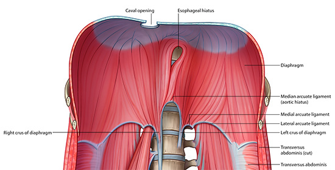

Posterior Viscera - Retroperitoneum: Page 3 of 7
Step 6
Add the
diaphragm
.
Step 7
With the help of the diagram, identify the following structures on the cadaver in the 3D window:
Medial (left and right crus) ligaments
Median ligaments
Lateral ligaments

Back
Return to Lessons Index
Continue